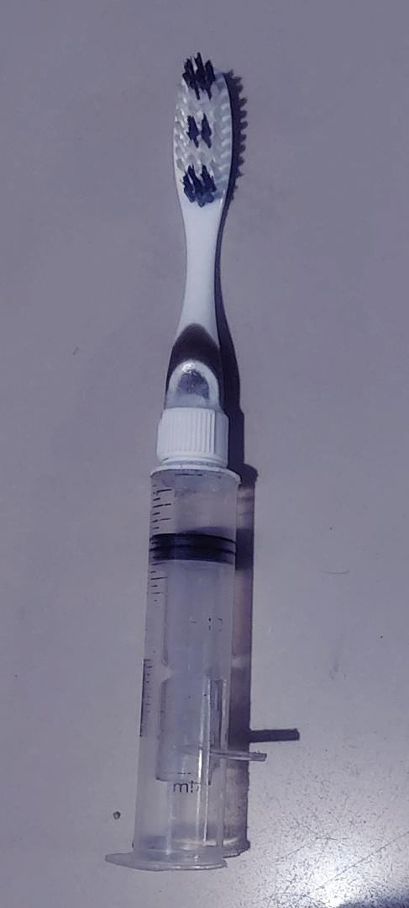

Conoce WaltFRESH
Diseñado para ofrecer una solución práctica de higiene bucal dondequiera que estés.
✅ Compartimento para crema dental
✅ Compartimento para seda dental
✅ Diseño portátil y ergonómico
✅ Estuche protector
WaltFRESH es el cepillo portátil todo en uno diseñado para acompañarte en cualquier lugar.

Diseñado para ofrecer una solución práctica de higiene bucal dondequiera que estés.
Integra compartimentos para crema dental y seda dental en un solo producto.
Ideal para la universidad, oficina, gimnasio o cualquier viaje.
El estuche protector ayuda a mantener el cepillo limpio y protegido.
Diseñado para facilitar tu higiene bucal en cualquier momento del día.
Usos estimados
Portátil
Compartimentos Integrados
Listo para usar
Todo lo que necesitas para una higiene bucal completa en un solo producto.
Retira el cepillo de su estuche protector de forma rápida y segura.
Accede fácilmente al compartimento donde se almacena la crema dental.
Disfruta de un cepillado cómodo gracias a su diseño portátil y ergonómico.
Finaliza tu rutina utilizando el compartimento de seda dental incorporado.
WaltFRESH integra un cepillo dental, un compartimento para crema dental y otro para seda dental en un diseño portátil.
Sí. Está diseñado para llevarse cómodamente en bolsos, mochilas o maletas sin ocupar mucho espacio.
Sí. El compartimento está pensado para ser rellenado cuando sea necesario.
Sí. El estuche ayuda a mantener el cepillo limpio y protegido durante el transporte.
¿Tienes dudas o deseas conocer más sobre WaltFRESH? Estaremos encantados de atenderte.
📍 Bogotá D.C., Colombia
📧 contacto:walfresh8@gmail.com
📞 +57 318 3720277
🕒 Lunes a Viernes
8:00 AM - 5:00 PM